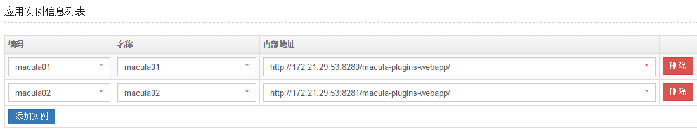

应用相关
Macula框架支持多实例集群模式，一个应用有多个实例组成，多个应用属于一个分组。默认情况下需要在应用管理后台配置实例信息，如图。这个配置会被用于实例间的请求转发，系统运行信息查询等。

ZooKeeper方式进行应用实例管理
在Web应用启动时，会自动将本实例的IP、端口，和contextPath信息注册到ZooKeeper；当实例停止时实例信息自动从ZooKeeper删除。
使用这种方式将会有以下效果：
- 应用实例信息不需要再通过人工方式配置，也不能编辑；
- 系统负载信息显示也将由以前的tab方式改为树形方式；
- 应用实例间的请求转发以ZooKeeper中登记的信息优先。
如何使用
需要在applicationContext-root.xml里增加一个id为“maculaCuratorFramework”的ZooKeeper客户端的bean配置，下面是个例子。系统启动时侦测到这个bean就会自动应用这中新方式；如果没发现这个bean就采用以前的方式（人工配置）。
<bean id="maculaCuratorFramework" class="org.macula.core.configuration.reloadable.CuratorFrameworkFactoryBean" init-method="start" destroy-method="stop">
<constructor-arg index="0" type="java.lang.String">
<value>172.20.70.21:2181</value> <!-- Zookeeper 集群地址-->
</constructor-arg>
<constructor-arg index="1" type="org.apache.curator.RetryPolicy"> <!-- 连接重试策略 -->
<ref bean="maculaCuratorRetryPolicy"/>
</constructor-arg>
</bean>
<bean id="maculaCuratorRetryPolicy" class="org.apache.curator.retry.ExponentialBackoffRetry">
<constructor-arg index="0">
<value>1000</value>
</constructor-arg>
<constructor-arg index="1">
<value>3</value>
</constructor-arg>
</bean>
- 注：目前这个功能只支持Tomcat 7, 8 和JBOSS EAP 4.3和6